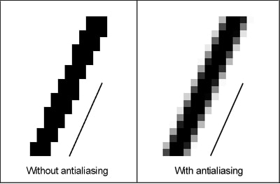

Transformări matriceale în 2D și 3D
Contents
Transformări matriceale în 2D și 3D#
Ne îndreptăm acum către aplicații, în special în geometrie și în grafică, motiv pentru care exemplele pe care le vom prezenta vor fi doar în plan și în spațiul tridimensional. Ne vom concentra pe transformările cele mai des întîlnite: translații, rotații, rescalări, oglindiri și forfecări.
Amintim că orice astfel de transformare înseamnă o aplicație liniară și, din moment ce nu se pierde sau se adaugă vreo componentă, e.g. figurile tridimensionale să devină bidimensionale sau invers, este vorba despre endomorfisme de forma \( T : \mathbb{R}^2 \to \mathbb{R}^2 \) pentru transformările în plan și \( T : \mathbb{R}^3 \to \mathbb{R}^3 \) pentru cele în spațiul tridimensional1.
De asemenea, orice aplicație liniară se caracterizează unic prin matricea sa într-o bază fixată. Și, dacă nu există o motivație suplimentară, vom folosi bazele canonice de fiecare dată.
Apoi, aplicarea funcției \( T \) este echivalentă cu înmulțirea cu matricea lui \( T \) în bazele canonice, \( M_T \). În plus, funcția inversă \( T^{-1} \), care este caracterizată de matricea inversă \( M_T^{-1} \).
Motivație: Exemple#
Începem cu cîteva transformări în plan, pe care le exemplificăm pe un triunghi concret, pentru a căpăta ceva intuiție și înțelegere de bază a situației.
Exemplele sînt inspirate din §10 [Hughes and van Dam, 2014].
Pornim cu un triunghi în plan, \( \Delta ABC \), cu vîrfurile \( A(1,1), B(7,1) \) și \( C(4,6) \), din figura de mai jos. Am ales triunghiul astfel încît să aibă latura \( AB \) paralelă cu axa \( OX \), pentru a o urmări ușor și în cazul în care își schimbă înclinarea.
Fig. 29 \( \Delta ABC \) căruia îi vom aplica transformări geometrice în plan#
Începem cu ceea ce vom constata că este o rotație. Alegem un unghi \( \theta = \dfrac{\pi}{6} \) și definim matricea:
Apoi definim transformarea plană care să aibă matricea \( R \) drept matrice în bazele canonice. De aceea, o putem defini direct matriceal:
Acum să aplicăm această transformare vîrfurilor triunghiului \( \Delta ABC \):
Triunghiul care are noile vîrfuri obținute mai sus este reprezentat în figura următoare.
Fig. 30 Triunghiul \( \Delta ABC \) a fost rotit cu \( \dfrac{\pi}{6} \) în jurul originii și s-a obținut \( \Delta A_R B_R C_R \)#
Considerăm acum o transformare \( T_2 \) dată de matricea \( S = \begin{pmatrix} 3 & 0 \\ 0 & 2 \end{pmatrix} \):
Aplicăm transformarea vîrfurilor triunghiului:
Ceea ce se obține este triunghiul din figura de mai jos.
Fig. 31 Triunghiul \( \Delta ABC \) a fost rescalat neuniform cu un raport \( \dfrac{3}{2} \) și s-a obținut \( \Delta A_S B_S C_S \)#
Se observă că triunghiul nu a fost rotit, însă coordonatele tuturor punctelor au fost rescalate neuniform. Din cauza elementelor de pe diagonala matricei \( S \), abscisele punctelor s-au triplat, iar ordonatele, s-au dublat. De aceea, triunghiul s-a „lățit“ mai mult decît s-a „alungit“, cu un raport de \( \dfrac{3}{2} \) între transformări, de fapt.
Fie acum transformarea \( T_3 \) dată de matricea \( F = \begin{pmatrix} 1 & 2 \\ 0 & 1 \end{pmatrix} \):
Pe vîrfurile \( \Delta ABC \):
Se obține triunghiul de mai jos.
Fig. 32 Triunghiul \( \Delta ABC \) a fost forfecat în raport cu axa \( OY \) și s-a obținut \( \Delta A_F B_F C_F \)#
Transformarea păstrează înălțimea triunghiului și îi mută (neuniform) coordonatele vîrfurilor pe orizontală, adică paralel cu axa \( OX \). O astfel de transformare se numește forfecare (eng. shearing).
Considerăm acum o matrice oarecare \( G = \begin{pmatrix} 1 & -1 \\ 2 & 3 \end{pmatrix} \) și transformarea \( T_4 \) definită de ea:
Vîrfurile triunghiului devin:
Se obține:
Fig. 33 Triunghiul \( \Delta ABC \) a suferit o transformare generală și a ajuns \( \Delta A_G B_G C_G \)#
O astfel de situație este greu de descris, întrucît triunghiul s-a transformat prin rotație, rescalare neuniformă și translație (cel puțin), iar cazul se numește transformare generală.
În fine, considerăm matricea \( D = \begin{pmatrix} 1 & -1 \\ 2 & -2 \end{pmatrix} \) și transformarea:
Vîrfurile triunghiului devin:
Ajungem la:
Fig. 34 Triunghiul \( \Delta ABC \) a fost transformat cu o matrice singulară și a ajuns degenerat: segmentul \( E-D-F \)#
În acest caz, matricea care caracterizează transformarea este singulară: se poate vedea că liniile sale sînt proporționale, ceea ce o face neinversabilă: \( \det D = 0 \). De aceea, transformarea pe care o induce se numește degenerată sau singulară și vedem că, într-adevăr, produce o schimbare a formei triunghiului și se ajunge la un segment (vîrfurile triunghiului devin 3 puncte coliniare).
Veți fi constatat că dintre toate transformările, lipsește chiar cea mai simplă: translația. Aceasta deoarece tratamentul ei matriceal este surprinzător de sofisticat și îl detaliem mai jos.
Cazul general în plan#
Putem extrage formulele generale din exemplele de mai sus:
Rotația de unghi \( \theta \), în sens trigonometric și în jurul originii este dată de o matrice de rotație cu forma generală:
Două remarci:
observăm că \( \det R_\theta = 1 \), indiferent de unghiul de rotație;
dacă vrem să facem rotația în jurul unui alt punct, iar nu în jurul originii, avem nevoie să facem mai întîi o translație în centrul de rotație (astfel încît acel punct să devină „noua origine“) și apoi să aplicăm rotația.
Translația unui vector din plan \( (a, b) \) cu vectorul \( (t_x, t_y) \) înseamnă vectorul \( (a + t_x, b + t_y) \). Însă acesta nu se poate obține lucrînd cu matrice \( 2 \times 2 \). De aceea, trebuie să aplicăm un artificiu de calcul și să lucrăm cu matrice \( 3 \times 3 \). Astfel, vectorul din plan devine \( (a, b, 1)^t \), iar matricea de translație devine:
din care extragem primele două componente și obținem punctul (vectorul) translatat.
Rescalarea se face cu o matrice diagonală, în care, dacă elementele de pe diagonală sînt egale, rescalarea este uniformă, adică cu aceleași proporții în toate direcțiile, iar dacă elementele sînt diferite, atunci rescalarea este neuniformă, cum am văzut în exemplul de mai sus. În general, o matrice de forma:
aplică o rescalare de raport \( s_x \) pe abscisă și de raport \( s_y \) pe ordonată. Dacă \( s_x = s_y \), rescalarea este uniformă; altfel, este neuniformă.
Forfecarea este o transformare care păstrează o direcție fixată și mută punctele paralel cu direcția respectivă. O forfecare după \( OY \) păstrează înălțimea figurii, deci transformarea are loc între minimele și maximele de înălțime ale figurii inițiale. Mai mult, una dintre baze rămîne fixată și se modifică cealaltă, paralel cu baza.
Pentru a păstra înălțimea (ordonata), este necesar să avem linia a doua a matricei de forfecare egală cu \( (0 \ 1) \). Prima linie este cea care dă „modulul“ forfecării. Așadar, în general, o matrice de forfecare după \( OX \) (i.e. care păstrează înălțimea) are forma generală:
Similar, o forfecare după axa \( OY \) trebuie să păstreze abscisa, deci are prima linie egală cu \( (0 \ 1) \) și a doua linie arbitrară.
În fine, o transformare generală este una dată de o matrice arbitrară, iar dacă matricea este singulară, transformarea se numește degenerată sau singulară și se obține o figură în dimensiune inferioară (în plan, dacă se pornește cu un poligon, se ajunge la un segment).
Important
Nu am luat în considerare cazurile cînd matricele transformărilor conțin și numere negative. Situația poate fi tratată astfel: punctele din plan pe care le-am transformat (cum sînt vîrfurile triunghiului, în cazurile concrete din exemple) se gîndesc, de fapt, ca vectori de poziție. Astfel, vîrful \( A(1, 1) \) înseamnă vectorul \( \vec{v} = \vec{i} + \vec{j} \), folosind notațiile specifice din plan.
Rezultă, deci, că o transformare care ar folosi valori negative, precum o rescalare sau o translație sau o forfecare ar schimba și direcția acestor vectori.
Iată în figura de mai jos rescalarea dată de matricea \( S = \begin{pmatrix} 3 & 0 \\ 0 & 2 \end{pmatrix} \) anterioară, obținîndu-se triunghiul \( \Delta A_S B_S C_S \), dar și rescalarea dată de matricea \( -S \), obținîndu-se triunghiul \( \Delta DEF \).
Fig. 35 Triunghiul \( \Delta ABC \) rescalat cu matricea \( S \Rightarrow \Delta A_S B_S C_S \) și cu matricea \( -S \Rightarrow \Delta DEF \)#
Remarcăm, de asemenea, că \( \Delta DEF \) este simetricul (oglinditul) \( \Delta A_S B_S C_S \) față de origine, o legătură pe care o vom explora mai tîrziu, în simetriile de reflexie. Deocamdată, vă invităm să revedeți secțiunea despre grupul lui Klein, înțeles ca grup de reflexii.
Trecerea la 3D#
O parte a transformărilor din plan poate fi trecută în spațiu foarte ușor. De exemplu, rescalarea va folosi tot o matrice diagonală, cu elementele egale dacă este uniformă și diferite, în caz contrar:
cu \( a = b = c \) pentru uniformitate.
Similar, forfecarea în 3D înseamnă o matrice superior triunghiulară, cu 1 pe diagonala principală, de forma:
Note
În general, trecerea la spațiul tridimensional ne aduce și control suplimentar asupra celor 3 direcții. În plan, o forfecare, de exemplu, fixează una dintre direcții și o modifică pe cealaltă. În spațiu, putem fixa una sau două dintre direcții și putem modifica pe celelalte două sau una.
Nu insistăm pe aceste detalii tehnice pe cazul general, deoarece credem că se vor înțelege cel mai bine atunci cînd le vom vedea pe exemple grafice. Mai mult, folosind puterea de calcul dintr-un limbaj de programare, vom putea modifica figuri mai sofisticate, nu doar triunghiuri sau cuburi.
Desigur, transformarea generală are sens și în spațiu, fiind dată de o matrice arbitrară, iar dacă matricea este singulară, se obține o transformare degenerată, care face ca figura spațială să devină plană.
Totuși, chiar dacă nu vom insista pe detalii teoretice generale, ne oprim să discutăm despre rotațiile din spațiu, deoarece vom întîlni concepte teoretice de mare importanță, printre care și aplicații ale cuaternionilor.
Rotații în spațiu#
Cazul rotațiilor din spațiu este mai dificil de tratat pe cazul general, deoarece avem cele 3 grade de libertate, care ne permit să avem rotații în jurul mai multor axe sau chiar plane.
Unghiuri Euler#
În termeni de specialitate, folosiți în programarea grafică și împrumutați din industria aeronautică, cele 3 feluri de rotații des întîlnite se numesc, în engleză, pitch, yaw și roll. În cazul general, arată așa (via Wikipedia):

Fig. 36 Rotațiile pitch, yaw și roll într-un sistem de axe, împreună cu celelalte grade de libertate#
iar în cazul unui avion, astfel:

Fig. 37 Rotațiile pitch, yaw și roll asupra unui avion#
În §8.3 (pp. 229-243) din [Dunn and Parberry, 2011] se prezintă o discuție foarte detaliată și bine documentată privitoare la reprezentarea în spațiu folosind 3 unghiuri. Printre altele, se arată că terminologia pitch-yaw-roll este moștenită din navigație și că, din punct de vedere matematic, își are originea într-un alt triplet, denumit pitch-heading-bank, cu semnificațiile:
rotația heading se face în jurul axei perpendiculare pe planul obiectului (corespunde yaw);
rotația pitch se face după axa laterală (transversală) față de obiect (corespunde pitch);
rotația bank se face după axa longitudinală a obiectului (corespunde roll).
Unul dintre avantajele utilizării unghiurilor Euler este acela că folosește minimum de informații: un triplet de numere reale. Mai mult chiar, acestea nu au vreo condiție de existență (în afara faptului că trebuie să fie numere reale), spre deosebire de forma matriceală pe care o vom vedea, unde rotația se reprezintă prin matrice care au forme impuse.
Unghiurile Euler au, însă, un dezavantaj major: nu formează o bază pentru \( \mathbb{R}^3 \); cu alte cuvinte, nu identifică unic un punct din spațiu. Un exemplu de astfel de confuzie în care două seturi de unghiuri Euler diferite precizează același punct2 este numit Gimbal lock și are o istorie fascinantă. Mai întîi, partea matematică.
Cel mai simplu este să prezentăm o ilustrație, preluată din articolul [Zhu et al., 2017]:

Fig. 38 Două seturi diferite de unghiuri Euler pot produce aceeași transformare (cf. [Zhu et al., 2017])#
Istoria conceptului și a denumirii este fascinantă. În general, astăzi se numește gimbal un dispozitiv a cărui schemă probabil ați mai văzut-o:

{kind=link}
Acesta are multiple aplicații, pornind de la dispozitive de navigație și giroscop. Se folosește în stabilizarea diverselor componente industriale și nu numai, stă la baza sistemului Steadicam pentru stabilizarea imaginii în camerele video, este o componentă importantă a funcționării aparatelor de zbor etc.
Istoria gimbal-ului este surprinzător de veche. Așa cum apare astăzi, cu cele 3 cercuri concentrice, a fost descris în secolul al XVI-lea de către italianul Gerolamo Cardano (1501-1576), în cadrul lucrărilor sale despre ceea ce astăzi numim arbore cardanic și care este o componentă importantă a autoturismelor și nu numai. Însă Cardano recunoaște că ideea nu este chiar originală și i-o atribuie lui Filo din Bizanț, tocmai în secolul al treilea înaintea erei noastre! Filo construise un fel de călimară cu cerneală care avea 8 găuri astfel încît tocul cu care scria putea fi înmuiat din aproape orice poziție. S-au găsit apoi și alte ilustrații care să menționeze utilizarea unor astfel de cercuri concentrice, eventual însoțite de busole, astfel încît astăzi nu există un consens dacă gimbal-ul a fost inventat de cineva sau se atribuie „culturii populare“.

Fig. 40 Ilustrație a unei variații de gimbal din jurul anului 1230 (via Wikipedia)#
{kind=link}
Coordonate sferice și cilindrice#
În plus, lucrurile se complică și pentru că avem mai multe moduri de a ne referi la coordonate în 3D. Cubul euclidian \( Oxyz \) se poate transforma într-o sferă sau într-un cilindru, pentru a menționa cele mai cunoscute schimbări de coordonate.
Cazul coordonatelor sferice este și cel mai ușor de înțeles, fiindcă se folosește, de exemplu, atunci cînd ne gîndit la Globul Pămîntesc. Un punct de pe Pămînt se poate specifica prin latitudine și longitudine, însă aceasta numai dacă știm că se află la nivelul mării. În caz contrar, am avea nevoie și de înălțimea sau adîncimea la care se află – în general, distanța față de centrul planetei. Un punct de pe mare sau dintr-o peșteră sau de pe un munte nu identifică precis locul pînă nu se știe și adîncimea sau înălțimea.
Coordonatele sferice sînt \( (\rho, \theta, \phi) \), reprezentate grafic astfel:
Fig. 41 Coordonatele sferice \( (\rho, \theta, \phi) \)#
Putem face legătura cu coordonatele polare din plan, \( (r, \theta) \), care sînt date de distanța de la origine și unghiul cu axa \( OX \), în sens trigonometric. Însă descoperim exact dificultatea menționată la începutul secțiunii: avînd 3 grade de libertate, putem considera mai multe unghiuri de rotație. De aceea, se consideră cele două unghiuri \( \theta \) și \( \phi \) în cazul sferic.
În imagine, puteți vedea că \( \theta \) caracterizează ceea ce în geografie numim latitudinea – distanța unghiulară față de meridianul de \( 0^\circ \), cum este cunoscută – și \( \phi \) măsoară longitudinea – distanța unghiulară față de Ecuator.
Trecerea de la coordonatele carteziene \( (x, y, z) \) la cele sferice \( (\rho, \theta, \phi) \) se poate face cu formule trigonometrice destul de simple:
și mai trebuie să remarcăm că domeniile de definiție sînt:
\( r \in [0, \infty) \), deoarece reprezintă o „rază“ (i.e. distanța față de centru);
\( \theta \in [0, 2\pi] \);
\( \phi \in [0, \pi] \), deoarece dacă \( \theta > \pi \), ne aflăm deja „în spate“, adică în sensul negativ al axei \( Ox \) și luînd din nou \( \phi \in [0, pi] \), obținem toate punctele.
Celălalt mod de a ne referi la un punct din spațiu folosind coordonate care nu sînt carteziene este prin coordonate cilindrice. Acestea nu sînt altceva decît coordonatele polare din plan \( (r, \theta) \), cărora li se adaugă o componentă de „înălțime“, \( z \). În fapt, dacă ne gîndim la un cilindru drept, adică avînd generatoarele paralele cu una dintre axele de coordonate, el ar putea fi caracterizat exact așa: este un disc, pe care îl „mutăm“ paralel în lungul generatoarelor, adică „pe înălțime“.

Fig. 42 Coordonatele cilindrice \( (r, \theta, z) \)#
Astfel, coordonatele cilindrice se exprimă în funcție de cele carteziene în modul așteptat:
Ultima „transformare“ arată că, de fapt, coordonata \( z \), numită ingineresc cotă sau înălțime rămîne neschimbată. Așadar, în înțelegerea standard a coordonatelor, este vorba despre un cilindru cu generatoarele paralele cu axa \( Oz \) și discul-bază aflat într-un plan paralel cu \( XOY \).
Evident, putem considera și cazul în care cilindrul are generatoarele paralele cu axa \( OY \) sau \( OX \), caz în care coordonatele \( y \), respectiv \( x \) rămîn neschimbate și celelalte două devin coordonatele polare din plan.
Revenim acum la reprezentarea rotațiilor în spațiu. Preluăm discuția care urmează din §8 al [Dunn and Parberry, 2011].
Matrice de rotație#
Transformarea prin rotație cu ajutorul unei matrice are avantajul practic dat de
faptul că este modul standard de reprezentare al acestei transformări în multe
produse software și biblioteci ale limbajelor de programare. Așadar, fie că folosiți
software-uri ca Blender sau Godot ori biblioteci C++ precum glm, veți întîlni
implementări ale rotațiilor cu ajutorul matricelor. În plus, din punct de vedere
matematic, lucrul cu matrice are avantajul că permite manipularea simultană a
mai multor date și totodată, prin structura algebrică subiacentă, putem compune
sau inversa astfel de transformări.
Pragmatic și computațional, matricele sînt mai dificil de manipulat și de aceea, produsele software menționate și bibliotecile care extind limbajele de programare sînt adesea extrem de bine optimizate.
Totuși, ne putem inspira din cazul din plan și să formulăm matricele de rotație în spațiu în jurul uneia dintre axe, centrul de rotație fiind, din nou, în originea sistemului de axe, iar sensul rotației fiind cel trigonometric. Astfel, o rotație de unghi \( \alpha \) de tip roll, adică în jurul axei \( OX \) se prezintă astfel:
Comparînd această matrice cu cea din plan, constatăm că s-a adăugat doar o linie și coloană care să aibă rolul de a păstra axa \( OX \) fixă.
Similar, o rotație de tip pitch, adică în jurul axei \( OY \) are matricea:
iar o rotație de tip yaw, adică în jurul axei \( OZ \) are matricea:
Trebuie menționat că, din cauza problemelor aduse de cele 3 grade de libertate și a celor de aliasing, precum Gimbal lock, s-au construit mai multe formalisme care să descrie rotațiile, mai mult sau mai puțin precis. Altfel spus, există situații cînd se poate accepta o oarecare imprecizie sau o posibilă problemă ori fisură în formalismul teoretic construit dacă problema respectivă poate apărea doar foarte rar sau poate afecta doar cazuri extreme de interes în subiectul respectiv. Nu intrăm în mai multe detalii, însă o privire de ansamblu asupra formalismelor care descriu rotațiile în spațiu puteți găsi aici.
Exemplu în spațiu#
Să luăm acum un exemplu și în spațiu, prin care să arătăm acțiunea matricelor de transformare și chiar a inverselor acestora.
Pornim cu o piramidă triunghiulară (tetraedru), cu baza în planul XOY. Vîrfurile sale sînt \( A(2, 1, 0), B(15,2,0), C(3, 10, 0), D(5,5,5) \).
Fig. 43 Tetraedrul de pornire din exemplu#
Îi vom aplica succesiv o operație de forfecare în raport cu planul bazei (care este, de fapt, planul \( XOY \)), apoi o rotație.
Pentru forfecarea după planul \( XOY \), vom considera matricea:
Aplicăm această transformare fiecăruia dintre cele 4 vîrfuri ale tetraedrului și obținem:
Figura obținută este piramida albastră din reprezentarea de mai jos.
Fig. 44 Piramida \( DABC \) după o transformare de forfecare cu planul \( XOY \) fix devine \( D_F A_F B_F C_F \)#
Acum să considerăm și o transformare de rotație aplicată rezultatului forfecării. Fie rotația de unghi \( \theta = \dfrac{2\pi}{3} \), reprezentată de matricea:
deoarece \( \cos \dfrac{2\pi}{3} = -\dfrac{1}{2} \) și \( \sin \dfrac{2\pi}{3} = \dfrac{1}{2} \).
Aplicăm această transformare fiecăruia dintre cele 4 vîrfuri ale tetraedrului forfecat și obținem:
Piramida rezultată este colorată cu verde în figura de mai jos.
Fig. 45 Piramida forfecată \( D_F A_F B_F C_F \) rotită cu \( \dfrac{2\pi}{3} \) în jurul axei \( OY \Rightarrow D_{FR} A_{FR} B_{FR} C_{FR} \)#
Observație: Este un exemplu foarte bun să ilustrăm faptul că înmulțirea matricelor, deci și compunerea transformărilor geometrice nu este, în general, comutativă.
Dacă am fi aplicat mai întîi rotația și apoi forfecarea, am fi obținut figura de mai jos.
Fig. 46 Piramida mai întîi rotită, apoi forfecată#
Pe lîngă faptul că este evident că piramida \( D_{RF} A_{RF} B_{RF} C_{RF} \) este diferită de \( D_{FR} A_{FR} B_{FR} C_{FR} \), mai constatăm și că forfecarea se comportă complet diferit. Matricea \( F_{XOY} \) de mai sus nu mai are aceeași acțiune predictibilă asupra piramidei rotite, pentru că, dacă în piramida inițială, planul bazei \( (ABC) \) era chiar inclus în planul \( XOY \), deci forfecarea se putea face paralel cu acest plan și rezultatul ar fi fost clar, piramida rotită nu mai are nicio față paralelă cu planul \( XOY \). De aceea, forfecarea, care acționează tot paralel cu planul \( XOY \), nu mai are un efect vizibil intuitiv asupra piramidei rotite. În acest caz, ar fi trebuit să găsim ecuația uneia dintre fețele piramidei rotite și să aplicăm forfecarea în raport cu planul respectiv – unul oarecare, în principiu – lucru care ar fi fost mult mai dificil.
O altă observație importantă este că succesiunea transformărilor se poate reprezenta direct și prin înmulțire cu matricea care este egală cu produsul matricelor transformărilor, în ordinea dorită. Așadar, pentru a ajunge la piramida mai întîi rotită și apoi forfecată putem înmulți la stînga vectorii-coloană ai vîrfurilor cu matricea \( R_y \left( \dfrac{2\pi}{3} \right) \cdot F_{XOY} \), iar pentru cealaltă ordine a transformărilor, înmulțim cu \( F_{XOY} \cdot R_Y \left( \dfrac{2\pi}{3} \right) \).
Rezultatele, evident, coincid cu cele obținute mai sus în cazul aplicării succesive.
Acum vrem să inversăm transformările, folosind matricele inverse, în ordinea corectă. Însă pînă atunci, să arătăm cum putem „strica“ această succesiune, aplicînd în final o transformare singulară.
Considerăm o matrice evident neinversabilă:
cu care acționăm asupra piramidei \( D_{FR} A_{FR} B_{FR} C_{FR} \) și obținem:
Figura, în acest caz, devine:
Fig. 47 Piramida degenerează într-o dreaptă (vîrfurile sale devin coliniare)#
Acum să inversăm transformările, adică vom realiza transformările:
De fapt, putem chiar ilustra compunerea transformărilor sus-menționată și înmulțim direct cu produsul inverselor matricelor în ordinea corespunzătoare.
Mai întîi, să calculăm aceste inverse. Pentru simplificarea notației, vom scrie simplu \( R \) pentru matricea de rotație de mai sus și \( F \) pentru cea de forfecare.
Cum \( \det R = \det F = 1 \), rezultă că inversele coincid cu adjunctele, adică \( R^{-1} = R^\ast \) și \( F^{-1} = F^\ast \). Calculăm succesiv:
Note
Ambele inverse (adjuncte) pot fi interpretate geometric, desigur. Inversa rotației de unghi \( \dfrac{2\pi}{3} \) este rotația de unghi \( \dfrac{4\pi}{3} \), deoarece unghiurile se adună la aplicări succesive, iar inversa forfecării cu factorii \( 2 \) și \( 3 \) este una care „aduce înapoi“ punctele, adică are factorii \( -2 \) și \( -3 \).
Aceasta ne oferă încă o metodă de verificare a calculelor.
Acum, inversarea completă a transformării înseamnă înmulțirea cu matricea \( F^{-1} \cdot R^{-1} \) a coloanelor corespunzătoare punctelor \( \{ A, B, C, D \}_{FR} \). Avem:
Așadar, am ajuns la piramida inițială, conform așteptărilor.
Cuaternioni din nou#
Am dedicat o întreagă secțiune introducerii cuaternionilor și diverselor generalizări către numere hipercomplexe, însă atunci am insistat pe proprietățile lor algebrice.
Ne reîntîlnim cu cuaternionii aici, accentul fiind de data aceasta pe proprietățile lor geometrice și modul în care se leagă de rotații și alte transformări în spațiu.
Amintim: mulțimea cuaternionilor, notată cu \( \mathbb{H} \), în onoarea matematicianului irlandez William Rowan Hamilton, care i-a introdus formal în matematică în secolul al XIX-lea, conține numere de forma:
unde unitățile imaginare \( i, j, k \) au proprietățile:
Înmulțirea cuaternionilor este, prin aceasta, anticomutativă, adică \( q_1 q_2 = -q_2 q_2, \forall q_1, q_2 \in \mathbb{H} \).
Putem modela cuaternionii într-o variantă ceva mai apropiată de geometrie. Astfel, un cuaternion \( q = a + bi + cj + dk \) poate fi gîndit ca o pereche alcătuită dintr-un scalar real \( a \in \mathbb{R} \) și un vector \( \vec{v} = bi + cj + dk \in \mathbb{R}^3 \). De aceea, \( a \) se mai numește partea scalară a cuaternionului, iar tripletul \( (b, c, d) \) se mai numește partea vectorială (în comparație cu partea reală și partea imaginară a unui număr complex). Această prezentare are multe avantaje care ne permit aproape să tratăm separat cele două părți ale cuaternionului. De exemplu, cum avem izomorfismul \( \mathbb{H} \simeq \mathbb{R}^4 \), ca spații vectoriale reale, putem defini o structură de spațiu euclidian pe \( \mathbb{H} \), produsul scalar al doi cuaternioni pe care îi putem scrie \( q_1 = (a_1, \vec{v}_1) \) și \( q_2 = (a_2, \vec{v}_2) \) fiind:
Similar, operația de conjugare a cuaternionilor se poate înțelege pur și simplu prin inversarea sensului părții vectoriale:
În ce privește aplicații geometrice ale cuaternionilor, putem începe cu o nouă perspectivă asupra numerelor complexe. Un număr complex scris în forma algebrică \( z = a + bi \) are forma matriceală:
printr-o corespondență care realizează un izomorfism de grupuri multiplicative. Acesta nu este și izomorfism de spații vectoriale, deoarece, așa cum am văzut, \( \dim \mathbb{C} = 2 \), ca spațiu vectorial real, iar \( \dim M_2(\mathbb{R}) = 4 \).
Dar, dacă facem apel și la forma trigonometrică a numerelor complexe, \( z = r (\cos \theta + i \sin \theta) \), matricea de mai sus se poate scrie:
dacă impunem restricția ca \( | z | = 1 \). Această restricție nu este greu de îndeplinit, deoarece în geometria din plan sau spațiu, foarte des se folosesc vectori ortonormați.
Totodată, matricea de mai sus are o proprietate specială: este chiar matricea de rotație în plan, de unghi \( \theta \)! Rezultă că un număr complex de modul 1 corespunde unei rotații în plan, de unghi egal cu argumentul său principal.
Putem porni de aici și să facem legătura cu cuaternionii. Cum din start un cuaternion are o parte scalară și una vectorială, ne așteptăm ca el să corespundă unei transformări în spațiu sau poate chiar în \( \mathbb{R}^4 \). Ajungem la interpretarea corectă după ce introducem încă o metodă (formalism) de a privi rotațiile în spațiu.
O rotație în \( \mathbb{R}^3 \) poate fi prezentată sub forma unghi-axă. Aceasta înseamnă o pereche \( (\theta, \vec{v}) \), unde \( \theta \) este unghiul de rotație în raport cu axa dată de dreapta-suport a vectorului \( \vec{v} \). De pildă, o rotație de unghi \( \dfrac{\pi}{3} \) de tip yaw, adică în lungul axei \( OZ \) se prezintă ca perechea \( \left( \dfrac{\pi}{2}, \vec{k} \right) \), în același context sus-menționat în care folosim vectori ortonormați – de aceea am apelat la versorul \( \vec{k} \), corespunzător axei \( OZ \).
În acest context, un cuaternion normat (unitar), adică de modul 1, corespunde unei rotații scrisă în forma unghi-axă, unde partea sa scalară este unghiul, iar partea sa vectorială, axa. Pentru motive pe care le vom clarifica ulterior, forma exactă a acestei reprezentări este:
unde \( \vec{r}_x, \vec{r}_y, \vec{r}_z \) sînt proiecțiile pe axele de coordonate ale axei generale de rotație dată de un vector normat \( \vec{r} \).
Într-o formă compactă, dacă notăm \( \alpha = \dfrac{\theta}{2} \), putem scrie un cuaternion \( q = (\cos \alpha, \sin\alpha \vec{r}) \). Faptul că \( \vec{r} \) trebuie să fie normat se vede acum din calculul modulului cuaternionului:
De remarcat că în cazul în care lucrăm cu cuaternioni unitari, conjugatul coincide cu inversul. Fie \( q = a + bi + cj + dk \in \mathbb{H} \), atunci, dacă scriem:
nu mai avem aceeași formulă de calcul pentru raționalizarea numitorului ca în cazul numerelor complexe. De aceea, se definește inversul unui cuaternion (nenul!) prin:
Note
Adăugăm o observație de intuiție geometrică: dacă un cuaternion unitar \( q \) reprezintă o rotație de un unghi anume (modul în care se face această corespondență va fi explicat un pic mai tîrziu), atunci conjugatul său, \( q^\ast \), reprezintă o rotație de același unghi, dar în sens opus. Alternativ, reprezintă o rotație de unghi opus. Pentru a vedea acest lucru, este suficient sa folosim interpretarea unui cuaternion prin partea reală – care reprezintă un unghi de rotație – și partea vectorială – care reprezintă axa de rotație. Conjugarea schimbă sensul părții vectoriale, așadar reprezintă o rotație după o axă opusă celei inițiale.
Strict pentru scopuri geometrice, am fi putut defini conjugarea unui cuaternion \( q = (a, \vec{v}) \) prin \( q^\ast = (-a, \vec{v}) \), deoarece ar fi avut același efect de rotație. Însă vom păstra definiția standard, întrucît are o legătură mult mai profundă cu alte structuri matematice decît aplicațiile în geometrie.
Important
Dacă nu se precizează altfel, vom lucra în continuare numai cu cuaternioni unitari.
De altfel, orice cuaternion se poate norma, înmulțindu-l cu scalarul egal cu inversul normei sale, deci putem presupune, pînă la un factor comun, că toți cuaternionii sînt unitari.
Continuăm acum cu definiția altor operații cu cuaternioni, pe care le vom folosi în transformări geometrice. Utilizăm din nou notația \( \alpha = \dfrac{\theta}{2} \), deci un cuaternion se scrie \( q = (\cos \alpha, \sin \alpha \vec{r}) \).
Făcînd analogia cu cazul numerelor complexe, \( z = |z| \cdot \exp(i\theta) \), unde \( \theta = \mathrm{Arg}(z) \), obținem \( \ln z = \ln |z| + i\theta \), iar dacă lucrăm cu numere complexe unitare, rezultă \( \ln z = i\theta \), o cantitate pur imaginară (partea reală se anulează).
Similar acum, logaritmul unui cuaternion \( q \) se definește prin:
unde vedem din nou că partea scalară se anulează (în ipoteza de lucru, anume că avem un cuaternion unitar), iar partea vectorială scoate unghiul în locul unei funcții trigonometrice.
Exponențiala unui cuaternion \( q \) se poate defini ținînd cont de faptul că este transformarea inversă logaritmării. Rezultă că exponențiala unui cuaternion se definește doar pentru cuaternioni cu parte scalară nulă, iar acțiunea trebuie să „întoarcă“ \( (0, \alpha \vec{r}) \) în cuaternionul inițial. Rezultă:
O discuție generală privitoare la funcția exponențială definită pe \( \mathbb{H} \) depășește scopurile acestei lucrări, însă menționăm doar că definiția acestei funcții se face într-o manieră similară identității lui Euler pentru numere complexe, adică folosind definiția funcției exponențiale cu ajutorul seriei Taylor.
Cu ajutorul funcției exponențiale putem defini ridicarea la putere pe cuaternioni, pe baza formulei \( a^b = \exp(b \log a) \) care se preia identic și pentru cuaternioni.
Aplicație: Interpolare cuaternionică (SLERP)#
Una dintre principalele aplicații ale cuaternionilor în grafică tridimensională este aceea a interpolării sferice liniare, numită în engleză spherical linear interpolation, de unde acronimul slerp.
În general, interpolarea în problemele de matematică înseamnă a găsi cea mai potrivită cantitate care se potrivește „între“ (inter) două cantități date. De exemplu, un caz des întîlnit este interpolarea liniară, numită și dreaptă de regresie. Pentru un set de puncte date în plan, interpolarea liniară găsește cea mai bună dreaptă care este „între“ toate punctele date, ca în figura de mai jos:
Fig. 48 Dreapta de regresie (interpolare liniară) între un set de puncte (via Wikipedia)#
Intuitiv, dacă un cuaternion definește o direcție unghiulară, adică un fel de unghi de rotație în forma axă-unghi, operația slerp este una ternară:
primele două argumente sînt cele două unghiuri între care trebuie să interpolăm;
al treilea argument \( t \) este un parametru între 0 și 1, care controlează rezultatul. Pentru valorile extreme, se obțin cele două unghiuri date, adică dacă \( t = 0 \), se obține primul unghi, iar dacă \( t = 1 \), al doilea.
Fig. 49 Interpolare liniară și interpolare sferică liniară (via [Valenti et al., 2015])#
Vedem în figură că interpolarea liniară (lerp) trasează segmentul dintre cei doi cuaternioni și găsește pe al treilea pe acest segment, în timp ce interpolarea sferică liniară (slerp) îl returnează pe cel care se află pe arcul descris de primii doi.
Acum, pașii pentru a obține cuaternionul care interpolează doi cuaternioni \( q_0, q_1 \) dați sînt:
Se calculează distanța unghiulară între cei doi cuaternioni: \( \Delta q = q_1 q_0^{-1} \);
Se aplică parametrul \( t \), care ne arată „fracțiunea“ din această distanță unghiulară: \( (\Delta q)^t \);
Se ajustează primul cuaternion cu această diferență, adică se deplasează unghiular: \( q_0 \mapsto (\Delta q)^t q_0 \).
În concluzie:
Însă ne întrebăm dacă acest calcul poate fi făcut și mai ușor, în primul rînd pentru aplicații practice. Lucrul cu cuaternioni este, în general, scump din punct de vedere computațional. Și în plus, problema seamănă cu o interpolare liniară: intuitiv, am vrea să găsim un fel de „combinație liniară“ a celor doi cuaternioni dați, care să se potrivească „între“ ei.
Se poate arăta (v. [Dunn and Parberry, 2011], pp. 260-262) că formula eficientă căutată este:
unde unghiul \( \omega \) se poate determina din produsul scalar între cuaternioni (amintim, lucrăm cu cuaternioni unitari):
În concluzie, unul dintre avantajele cuaternionilor este că rezolvă o problemă dificilă din cazul unghiurilor Euler, anume Gimbal lock. Prețul plătit este doar o creștere cu o treime a memoriei: în loc de 3 numere reale pentru unghiurile Euler, folosim 4 numere reale pentru componentele unui cuaternion. Un dezavantaj, pe lîngă o oarecare dificultate de a-i înțelege și manipula, ca obiecte 4-dimensionale, este acela că implică și condiții de validare. Orice triplet de numere reale poate fi un triplet de unghiuri Euler, însă nu orice cvadruplu de numere reale poate fi un cuaternion unitar.
Explicație: Unghiul de rotație#
Am văzut în prima parte a secțiunii că dacă vrem să scriem un cuaternion (unitar) cu semnificație geometrică, acesta este \( q = (\cos \alpha, \sin \alpha \vec{r}) \), unde \( \alpha = \dfrac{\theta}{2} \), iar \( \theta \) reprezintă unghiul rotației induse de cuaternionul \( q \) (în formalismul unghi-axă). De ce folosim, totuși, jumătatea unghiului rotației în această reprezentare?
Răspunsul este detaliat în pp. 269-270 al [Dunn and Parberry, 2011] și-l explicăm pe scurt aici. Dacă ne inspirăm din cazul complex, am văzut că o înmulțire cu \( i \), adică cu numărul complex scris algebrice \( 0 + 1 \cdot i \) sau trigonometric, \( \cos \dfrac{\pi}{2} + i \sin \dfrac{\pi}{2} \), obținem o rotație cu \( \dfrac{\pi}{2} \), în sens trigonometric:
Fig. 50 Înmulțirea cu \( i \) produce o rotație în sens direct cu \( \dfrac{\pi}{2} \)#
Putem încerca un calcul similar și cu cuaternioni. Pentru simplitate, vom presupune doar un cuaternion pur imaginar. În calculul:
am pornit cu cuaternionul \( i \) pe care am încercat să-l rotim în jurul axei \( OZ \) (corespunzătoare cuaternionului \( k \)) și am obținut cuaternionul \( (0, \cos \theta, \sin \theta, 0) \), adică unul care se află în planul \( XOY \) (avînd componenta \( k \) nulă).
Dar dacă încercăm să rotim, de exemplu, cuaternionul \( i + k \), am obține:
care corespunde cuaternionului \( (-\sin \theta, \cos \theta, \sin \theta, \cos \theta) \), unul general, deloc așteptat. Am pornit cu un cuaternion de pe axa \( OZ \) și l-am rotit (teoretic) corespunzător axelor \( OX \) și apoi \( OZ \), dar am obținut unul arbitrar.
Ca să ajungem la direct concluzie, ținînd cont și de faptul că înmulțirea cuaternionilor nu este comutativă, rotația așteptată se obține din calculul:
Să analizăm:
am pornit cu cuaternionul \( i + k \), adică unul corespunzător unui punct din planul \( XOZ \). Mai precis, îl gîndim ca pe vectorul \( \vec{i} + \vec{k} \in \mathbb{R}^3 \), asimilat unui cuaternion cu parte scalară nulă.
l-am rotit cu cuaternionul \( \cos \theta + k \sin \theta \), adică una în jurul axei \( OZ \).
am obținut un cuaternion care are toate componentele vectoriale nenule.
Rotația, însă, nu s-a făcut prin înmulțire directă și nici nu a ținut cont de unghiul inițial: a trebuit să facem înmulțirea cu cuaternionul și cu conjugatul său, iar unghiul de rotație obținut a fost dublu.
Concluzia este sumarizată mai jos.
Important
Rotația indusă de cuaternionul (unitar) \( q = (\cos \theta, \sin\theta \vec{r}) \) pentru vectorul \( v \in \mathbb{R}^3 \) se obține gîndit \( v \) ca pe un cuaternion cu parte scalară nulă și apoi făcînd înmulțirea \( qvq^\ast \).
Unghiul de rotație obținut din această procedură este \( 2 \theta \).
- 1
Făcînd un oarecare abuz de limbaj, vom denumi în continuare „cubul euclidian“ \( \mathbb{R}^3 \) „spațiu“, așa cum este cunoscut în general. Așadar, capitolul curent tratează transformări în plan și în spațiu.
- 2
În mai multe discipline ale ingineriei (prelucrarea semnalelor, grafică, imagistică etc.) se folosește termenul aliasing pentru a descrie o situație cînd două configurații sau transformări diferite par identice. De exemplu, gimbal lock-ul prezentat în curs este o situație de aliasing, dar termenul se folosește ușor relaxat și în grafică și inginerie de sunet. Atunci cînd vocea înregistrată prin microfon sună aproape dublată, spunem că are loc un efect de aliasing. În grafică și prelucrarea imaginilor, se folosesc tehnici de antialiasing, care „aproximează“ între 2 pixeli care prezintă aliasing, producînd o imagine mai puțin precisă, însă care ține cont de toate alias-urile. 